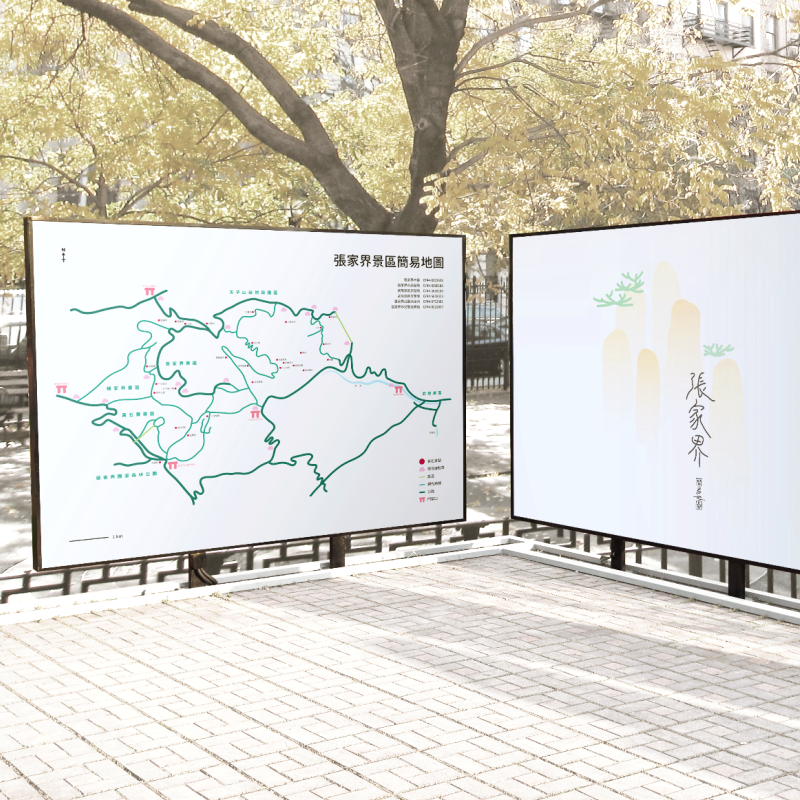
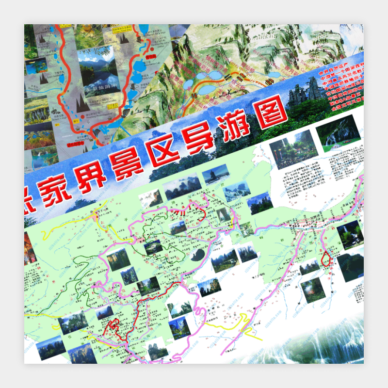
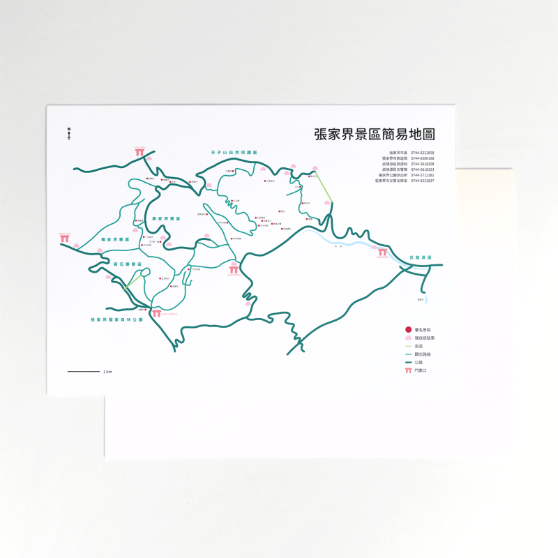
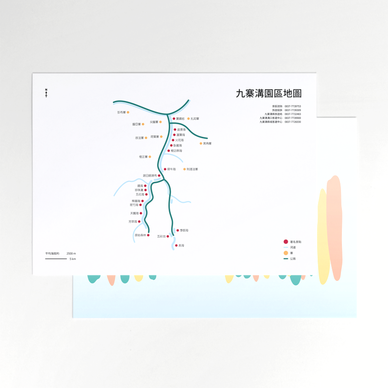
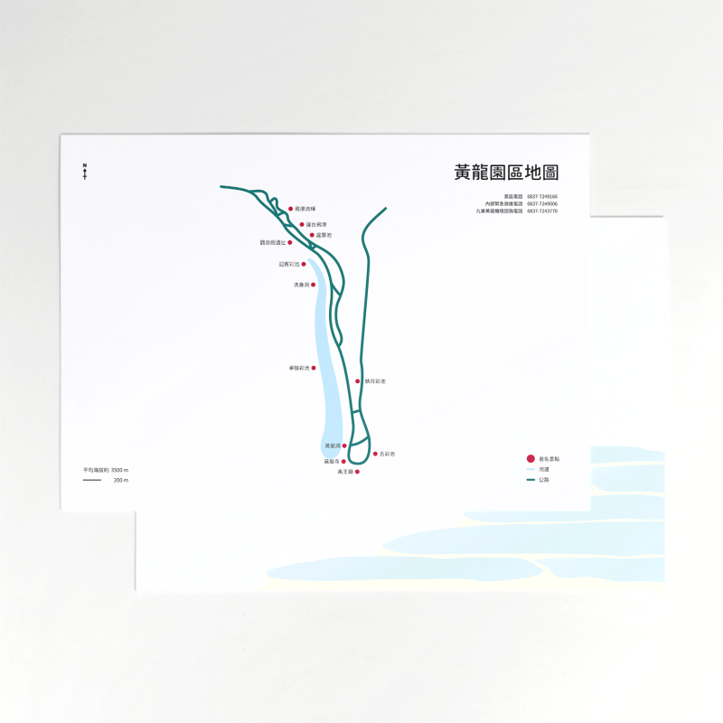
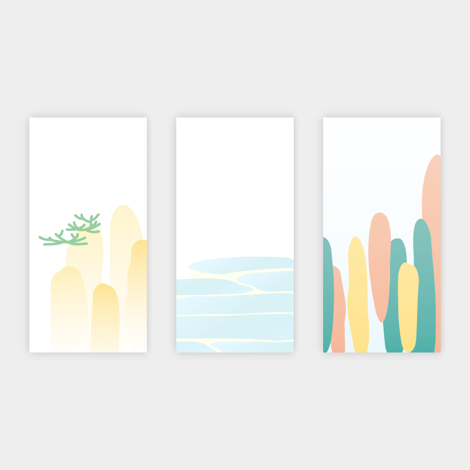
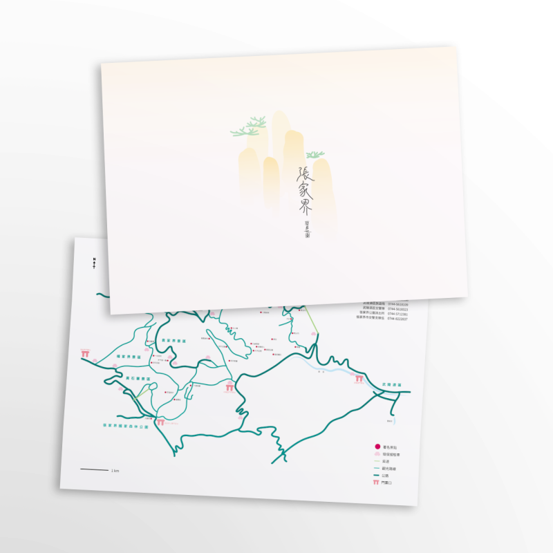
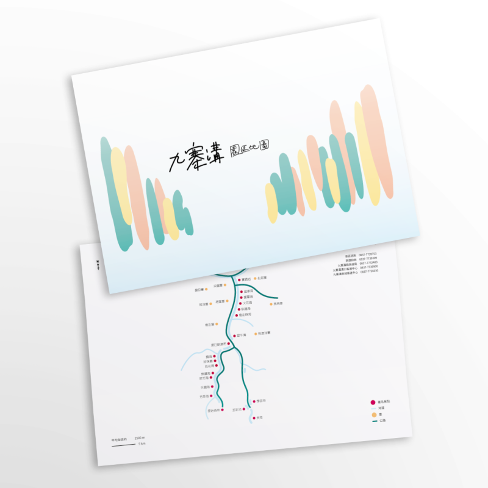
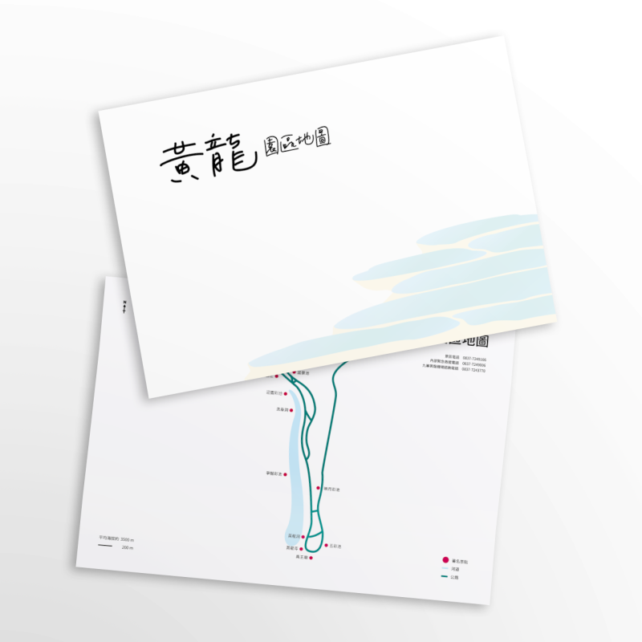

旅遊地圖重新設計

規劃自助旅行時看建網路上的觀光資訊超亂、很令人頭痛，
整張景區地圖滿滿的都是顏色和照片，
過多的資訊會讓人不知道從何下手開始規劃行程。
參考很多現有版本的地圖後刪掉無用的資訊，
讓剛看到地圖的人能清楚的瞭解景區及路線，
重新設計的地圖包括「張家界、九寨溝、黃龍」三個熱門景點。
中心為著名景點、主要觀光路線、河道等。
左上為方位；
左下為比例尺及海拔高度，九寨溝及黃龍可能會有高山症；
右上為標題和景區相關的重要聯絡電話；
右下為圖示說明。
而另一面亦有圖樣設計，捕捉對景點的印象並簡化為圖形。
       
↑